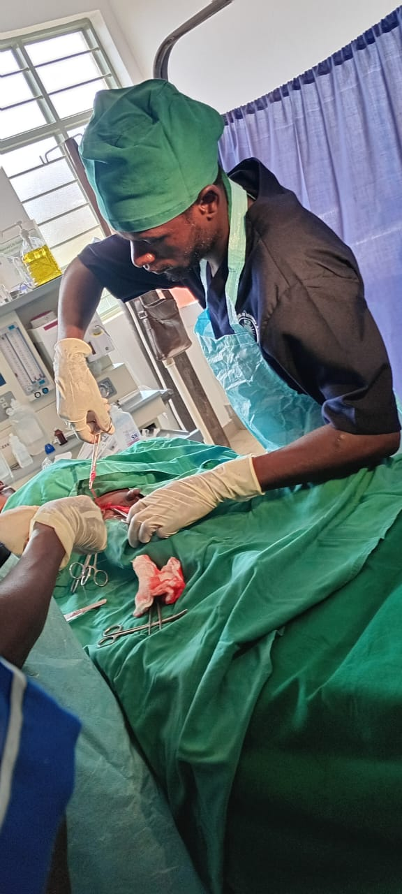
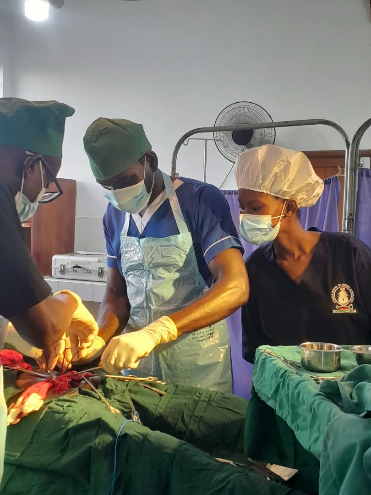
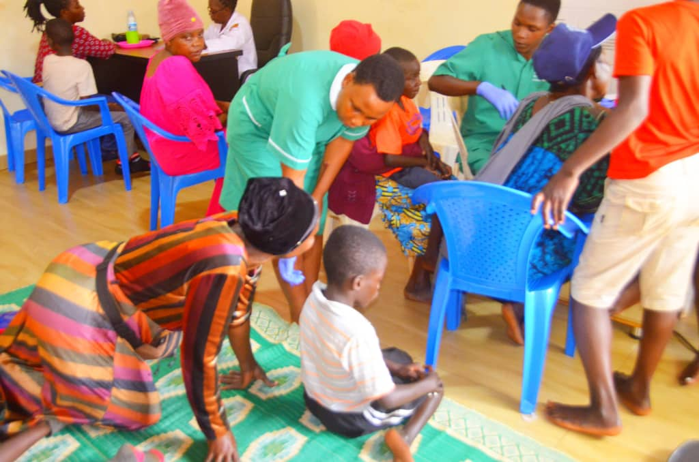

PRACTICAL EXPOSURE
Clinical Rotations & Field Training
Direct patient engagement, surgical observations, and hands-on community health practice.
 Field Orientation
Field Orientation
Health Center Briefings
Students attending morning clinical briefings and ward protocols.

Surgical WardsOperating Theater Rotations
Active participation in live surgical procedures with clinical mentors.

Surgical SkillsClinical Precision Care
Practical mentoring in handling surgical instruments and sterile setups.

Community CareField & Community Work
Public health assessments, hospital ward visits, and community outreach.